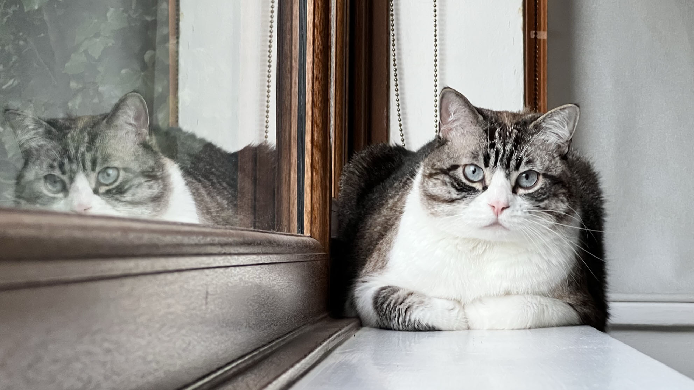

In the late 1960s Siamese breeder Dorothy Hinds-Daugherty of Philadelphia produced a litter that included three Siamese kittens with the pointed pattern and pure white mittens and boots.
Intrigued by the unique pattern, she worked for a few years at turning this variety into a breed, and then passed the torch to breeder Vikki Olander of Norfolk, Virginia. Siamese and American Shorthairs were used in creating the breed.
What was most significant about the lunar voyage was not that man set foot on the Moon but that they set eye on the earth.
Olander wrote the first standard for the breed and gave the breed a paw in obtaining recognition.
In 1974 CFF and ACA accepted the Snowshoe as an experimental breed, but interest dwindled and by 1977 Olander was the only Snowshoe breeder in the United States.
It seemed that the Snowshoe might be just a passing phase.
After three years of struggle to keep the breed alive, several other breeders joined Olander and together they obtained Championship status from CFF in 1983; the ACFA granted Championship status in 1990.
Breeders are working toward CFA acceptance, but currently don’t have enough cats and breeders to meet the CFA’s requirements.
Despite the slow start, the last five years have seen the Snowshoe gain in both numbers and popularity. In the future, breeders will be working toward larger size, more uniform body type, and deeper eye colour.